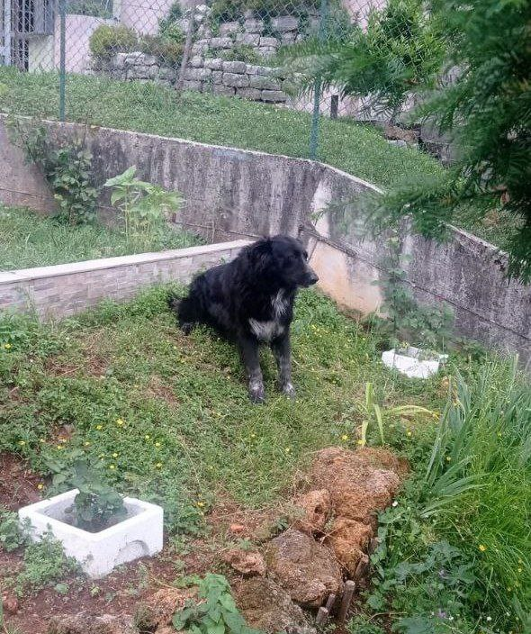
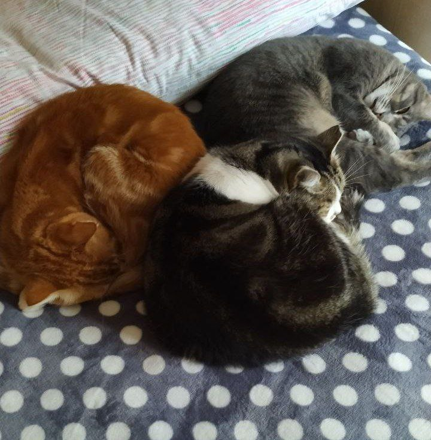

Questa bestia nera denominata anche cane, si chiama Romeo.
Ha 4 anni e l'abbiamo adottato quando aveva un anno al canile di Colzate.
Il primo periodo si vede che era ancora scosso per l'abbandono da parte del suo primo padrone ma dopo qualche mese si è perfettamente ambientato.
è un cane molto fedele ed obbediente ed ogni domenica io, mio padre e Romeo andiamo a fare delle camminate in montagna.

Queste 3 palle di pelo sono i miei gatti.
Quello rosso, si chiama Chicco ed ha 9 anni
Quella nera e bianca si chiama Mia ed ha 4 anni
Quella di color grigio si chiama Lilly ed ha 3 anni